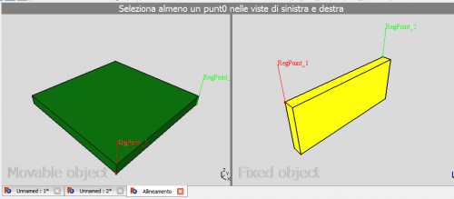

|
| Emplacement du menu |
|---|
| Edition → Alignement... |
| Ateliers |
| Tous |
| Raccourci par défaut |
| Aucun |
| Voir aussi |
| Placement |
Contents |
Description
Cette fonction vous permet de positionner et orienter deux formes sélectionnées, en alignant deux ou plusieurs points sélectionnés, sur chacune de ces deux formes différentes, les uns avec les autres. Elle travaille dans différents ateliers.
L'outil d'Alignement ne nécessite qu'une seule paire de points de référence, mais dans la plupart des cas pour une orientation et un positionnement correct, trois points de référence seront nécessaire.
Exemple
Ceci est l'exemple de projet avant que les d'objets aient été alignés

Pour Aligner les objets commencez par une Multi-sélection de deux objets seulement. Le premier objet sélectionné sera l'objet fixe. Le second objet sélectionné sera déplacé par l'outil d'Alignement.
Après avoir sélectionné deux objets, démarrez l'outil Alignement du menu Edition → Alignement ... .
Une double fenêtre apparaîtra, montrant une vue de chacun des objets sélectionnés. La fenêtre de gauche affiche l'objet mobile et la fenêtre sur la droite montrera l'objet fixe.
Sélectionnez une ou plusieurs paires de points dans les deux vues, que vous voulez que l'outil Alignement fasse coïncider. 
{kind=link}
Clic droit soit dans les fenêtres pour accéder au menu contextuel. Dans le menu contextuel vous pouvez
- Supprimer la dernière paire de points,
- exécuter puis fermer l'outil Alignement,
- annuler l'opération Alignement et fermer l'outil Alignement
- ou synchroniser des vues. Si coché, cela va synchroniser le pan/rotation/zoom des vues dans les fenêtres doubles.

Après l'exécution de l'outil d'alignement à plusieurs reprises, le projet pourrait ressembler à ceci: